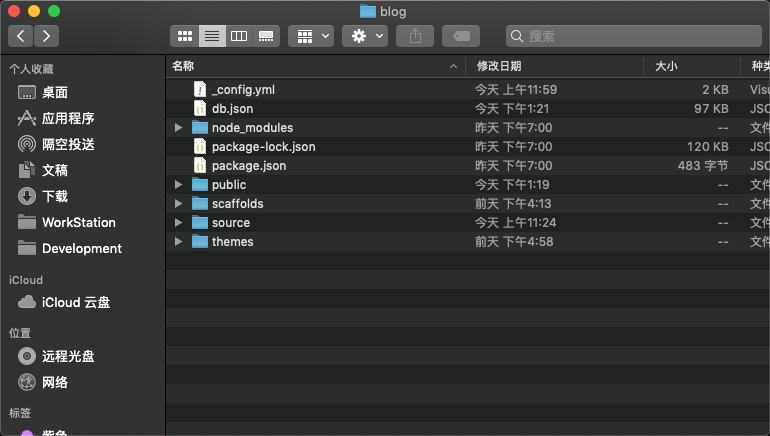
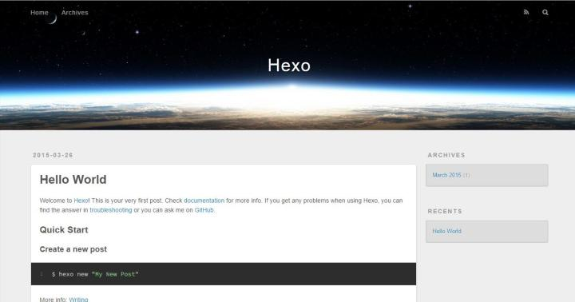
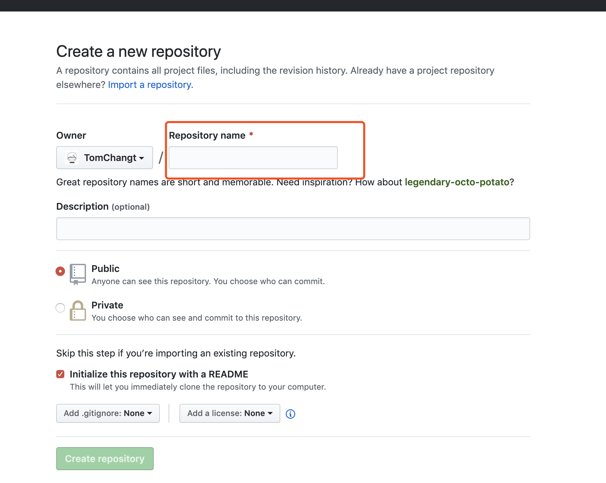
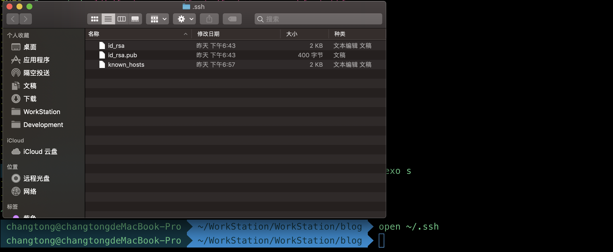
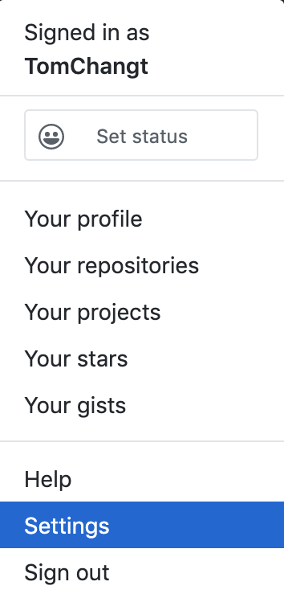
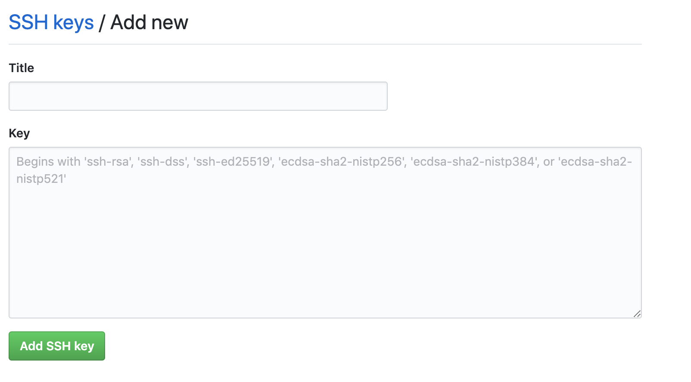

最近有想法重新开始写博客了,随着年纪越来越大,需要有些沉淀的东西.16年的时候用hexo+github搭建过博客系统,于是花了点时间重新弄了一遍.我就稍稍分享一下搭建过程,当作是我这个博客的第一篇文章.
系统环境
- macOS Mojave 10.14.5
- Nodejs v12.1.0
- Npm v6.9.0
- Git v2.20.1
安装 Hexo
因为本人本身是后端开发,加上系统用的是macOS,所有git和node都有提前装好,网上很多mac下安装git和node的教程,我这里就不阐述了.安装好git和node以后开始安装Hexo.找一个合适的目录来存放你的博客文件,比如我这里新建了一个blog文件夹来放置我的博客文件 ~/WorkStation/WorkStation/blog,进入blog文件夹下开始安装.
1.安装hexo
npm install -g hexo-cli2.初始化hexo
hexo init3.安装必要组件
npm install安装完成后我本地目录结构如下:

这样本地的网站配置也弄好啦，输入hexo g生成静态网页，然后输入hexo s打开本地服务器，然后浏览器打开http://localhost:4000/，就可以访问了,效果如下:

4.使用 Hexo
Hexo经常会用到的命令:
- hexo clean
- hexo generate
- hexo server
- hexo deploy
Hexo命令大多可以缩写,比如hexo s 、 hexo d等等.
更多详细命令可以参照官方文档.
部署到Github
1.创建Repository
在自己的github上新建一个repository,这里注意一下我名字tomchangt,所以我的repository name要填写tomchangt.github.io,名字遵从 yourname.github.io格式,不过这里填错了也没关系,后面可以修改回来.

2.链接github与本地
打开terminal,然后输入下面命令:
git config --global user.name "你的GitHub用户名"
git config --global user.email "你的GitHub注册邮箱"生成密钥SSH key:
ssh-keygen -t rsa -C "你的GitHub注册邮箱"然后找到刚才生成的.ssh文件下的文件id_rsa.pub密钥,用文本编辑器打开复制里面的内容.

打开你的github,在点击settings,在点击SSH and GPG keys,新建一个ssh,名字可以随便.然后将刚才复制id_rsa.pub里的内容复制到key里面,点击add ssh key即可.


3.配置本地hexo
在Hexo目录下的_config.yml文件下修改以下信息
# Deployment
# Docs: http://hexo.io/docs/deployment.html
deploy:
type: git
repository: https://github.com/xxxx/xxxx.github.io.git
branch: master安装hexo deployer插件
npm install hexo-deployer-git --save执行下面命令,将hexo生成静态文件提交到github上,过一会你就可以在https://xxxxxx.github.io下看到博客内容了.
其他
简单的就写这么多吧,其实网上Hexo+Github建博客教程太多了,我也只是记录以下我建立博客的一个过程,并且将它当作我博客的第一篇文章,算是一个新的开始吧.